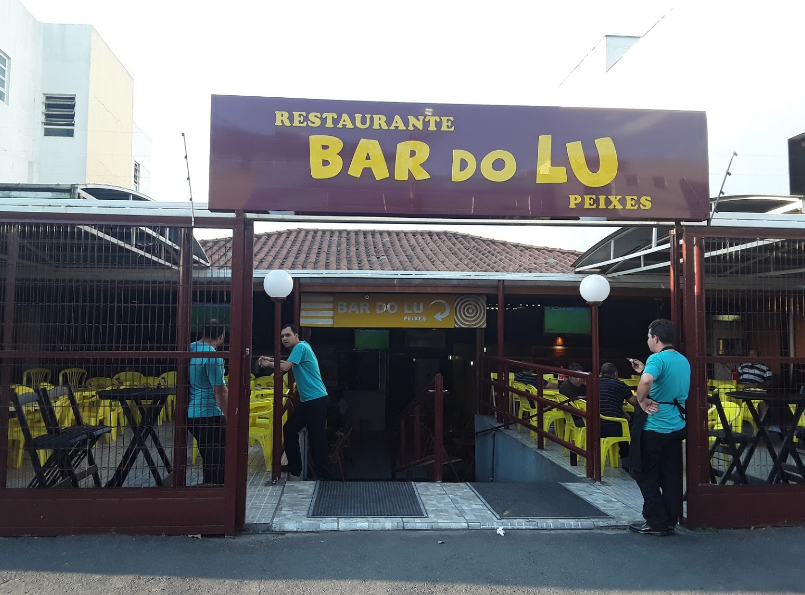
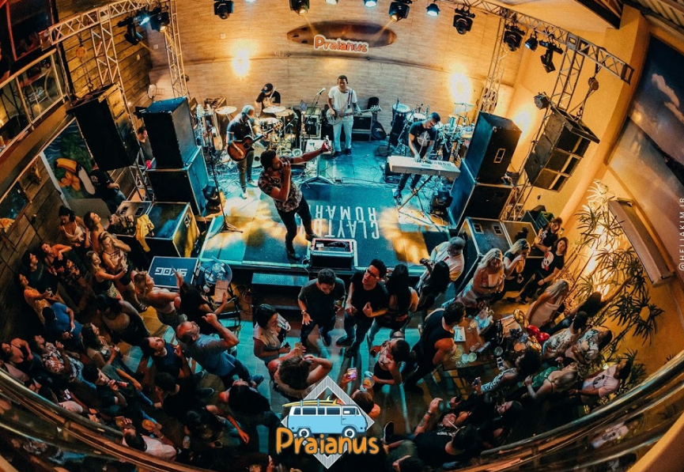
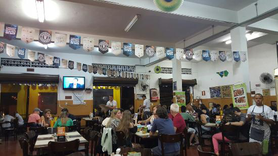
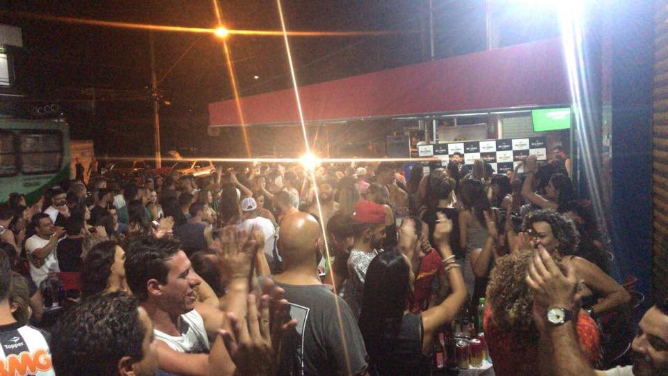

Bar do Lu

Com duas unidades no mesmo bairro, o Bar do Lu já é tradicional ponto de encontro da região do Barreiro. Com música ao vivo e uma bela decoração, o estabelecimento é ideal para quem deseja experimentar um bom peixe. O cardápio diverso também oferece opções de porções e cerveja gelada. O estabelecimento foi o primeiro da região a promover shows de stand up comedy para entreter seus clientes e também transmite jogos de futebol.
Comentários
Juliana Campos
Adorei esse bar, ótimo atendimento e comida muito gostosa
Emerson Dias
Só vejo os jogos do meu timão tomando uma gelado do bar do Lú
Praianus

O Praianus Bar leva para o Barreiro um conceito de estabelecimento que faz sucesso em outras regiões de BH, reunindo em um só espaço música ao vivo, comida boa e um bar temático completo. O cardápio conta com pratos como moqueca de peixe, camarões, arroz com polvo e as tradicionais porções de carnes nobres na chapa, entre outras novidades. As delícias fazem referência aos litorais que são o refúgio dos mineiros nas férias pelo Brasil.
Comentários
Cléber Prado
É novo porém o melhor da região do Barreiro!
Alisson Pinto
Não gostei muito.
Bar do Zeze

Com mais de dez anos de história e outros dois primeiros lugares no Comida di Buteco (2004 e 2006), o Bar do Zezé começou como uma pequena quitanda, que vendia frutas, legumes e enlatados. Quando a cerveja e tira-gostos entraram na roda, o lugar teve que ser ampliado para comportar a clientela que não parava de crescer. Um dos tira-gostos mais pedidos do cardápio é o "Chã Jiló" e "Dona Moranga", feito com purê de abóbora, carne cozida e jiló fatiado. Para acompanhar, a casa oferece refrigerante, cerveja de garrafa e aperitivos mineiros.
Comentários
José Santo
Tem o melhor Pão de alho da região, recomendo muito.
Bianca Bila
Um ótimo lugar para se ir com toda a família.
Juca juca
Amo esse lugar.
Dui e Sidoca

A Espeteria Dui e Sidoca, localizada na região do Barreiro, é o resgate do tradicional encontro entre amigos. Com cerveja geleda, diferentes tipos de espetinhos e um ambiente agradável, o espaço é uma ótima opção para o Happy Hour.
Comentários
Pereira Gabriel
Melhor rolê do barreiro, todo fim de semana compareço!
Patrícia Aline
Não gostei muito, muitos jovens fazendo baderna.
Gustavo gus
Ótimo lugar para sair em uma sexta ou fim de semana